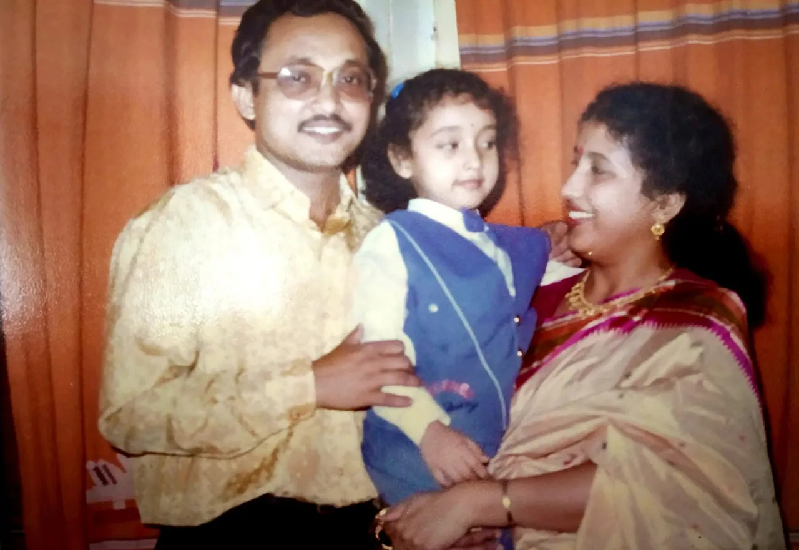
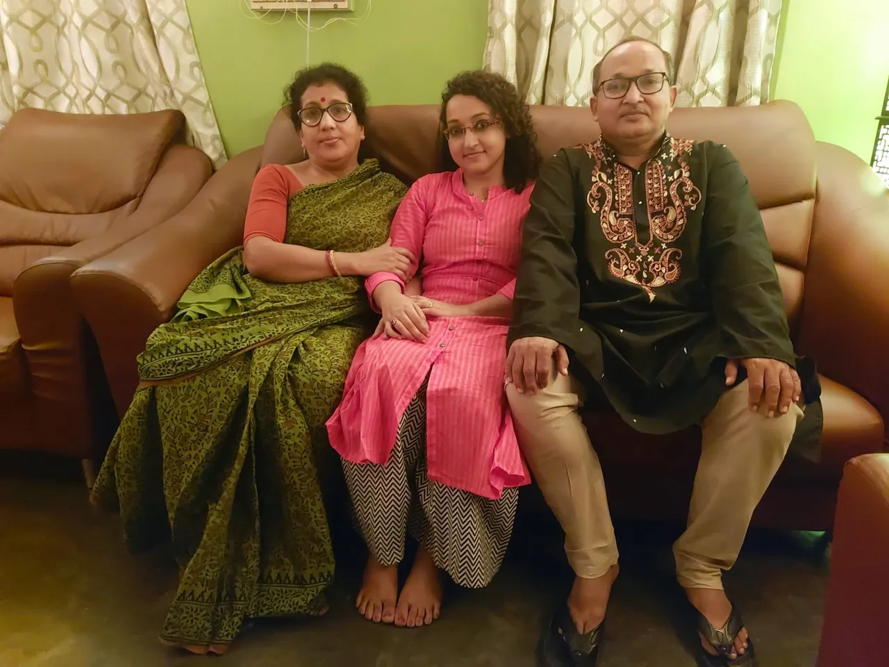
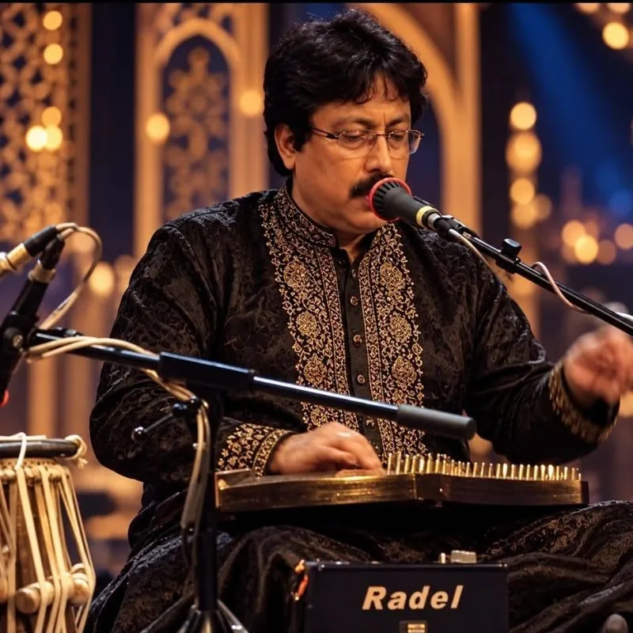
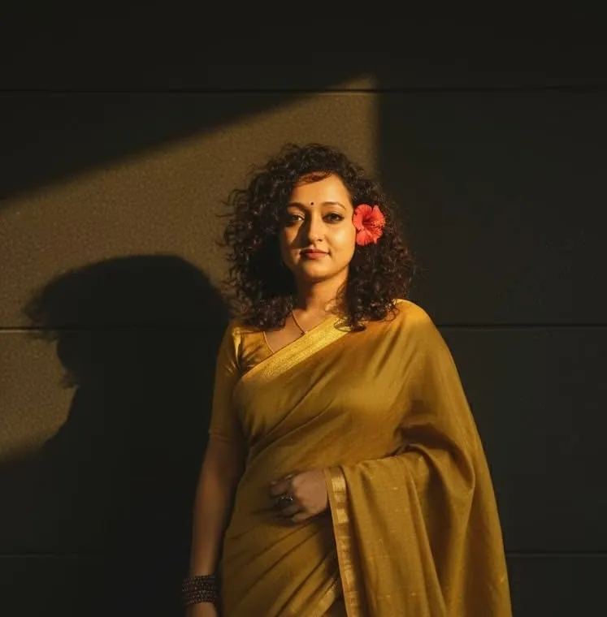

Bhavani Dayani
দুর্গা বন্দনা · Durga Vandana
0:00 / 4:01
A personal space · A life in music
Musician · Vocalist · Artist
Where Poetry Finds a Voice, and Melodies Find a Home
Explore her music
A little about me
There are voices that sing melodies, and then there are voices that breathe life into poetry, tradition and emotion. Hindolita Chakraborty’s musical world belongs to the latter — a space where music transcends notes and becomes an intimate expression of the human spirit.
Rooted in the rich musical heritage of Bengal and inspired by the timeless traditions of Indian music, her artistic interests embrace a beautiful spectrum — from the expressive depth of ghazal and thumri and the lyrical richness of semi-classical and Ragpradhan songs, to fusion, the soulful traditions of Rabindrasangeet and Nazrulgeeti, the intricate melodic landscapes of Indian classical music and the earthy charm of Indian folk music.
Bengal · Heritage · Melody
Where it began
Music came to Hindolita first at home — she began her learning under the tutelage of her parents.


Father & guru
Notable tabla practitioner and renowned teacher.
Mother & guru
Veteran classical singer and teacher.
The learning continues
Guru

Guru
On stage
A graceful voice and captivating stage presence.
Listen & discover
দুর্গা বন্দনা · Durga Vandana
বাজে করুণ সুরে · Rabindrasangeet
Traditions that inspire
Shaped by heritage, guided by melody and enriched by an abiding love for music.

Poetry of love, longing and reflection, sung with restraint and nuance — where every word is given room to breathe.
A romantic, expressive semi-classical form, where lyrical phrases and subtle ornamentation bring emotion to the fore.
Where the grammar of a raga meets the poetry of a song — classical discipline in conversation with emotional storytelling.
Traditional sensibilities meeting contemporary sounds and arrangements, while retaining the emotional essence of their origins.
The poetic and musical universe of Rabindranath Tagore, where nature, love, spirituality and human emotion find their most delicate expression.
The emotional intensity, lyrical beauty and melodic diversity of Kazi Nazrul Islam — deeply Bengali, yet universal in its appeal.
Simplicity, spontaneity and the stories of communities and landscapes, carried through melodies that have travelled across time.
To stay connected, this is where the next connection begins.